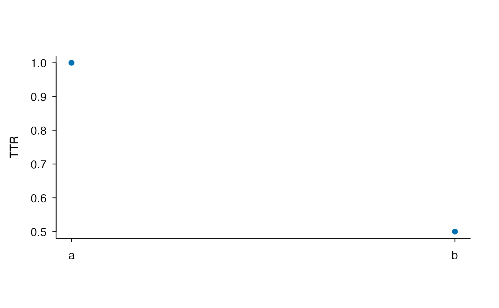
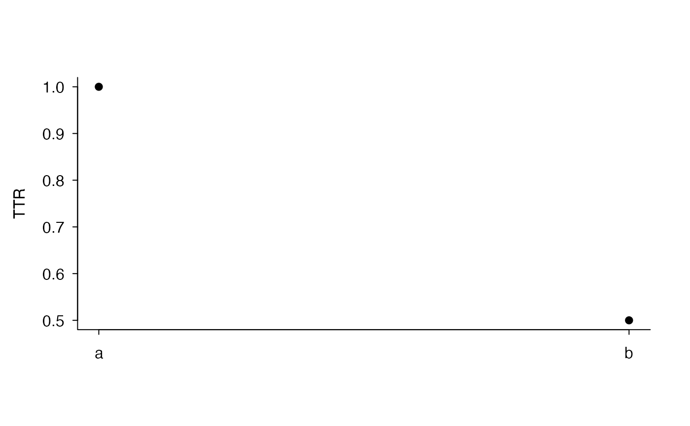
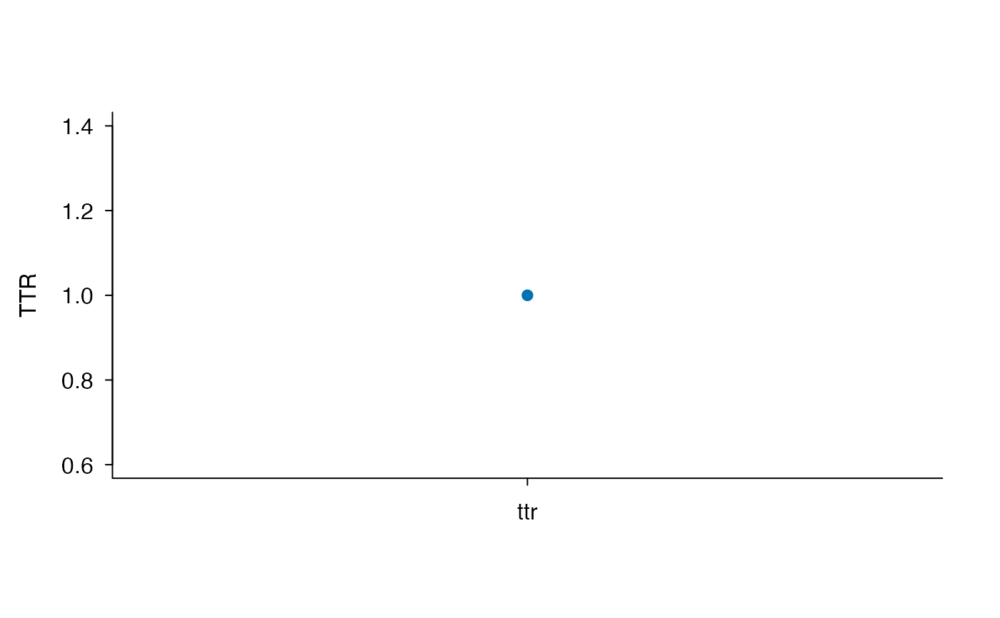
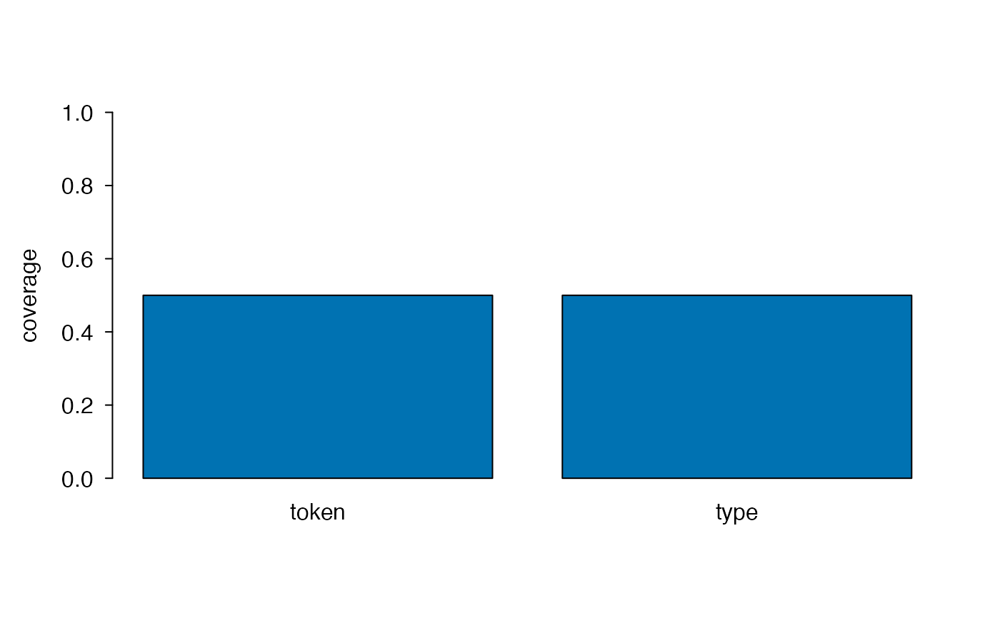

Adapt, Reshape, and Plot Lexical-Diversity Results
lexdiv_convenience.RdProvides explicit convenience operations around the versioned computation core. Adapters expose document and token order; wide reshaping does not recompute values; plot methods select one measurement specification so incompatible metric scales or parameters are not silently compared.
Usage
lexdiv_as_documents(
x,
document_col = "document_id",
token_col = "token"
)
lexdiv_widen(
x,
id_cols = NULL,
names_from = NULL,
values_from = c(
"value", "status", "missing_reason", "method_id",
"below_quality_floor", "metric_contract_id", "metric_contract_version",
"requested_parameters", "effective_parameters", "N", "V"
)
)
# S3 method for class 'lexdiv_wide_results'
print(x, ...)
# S3 method for class 'lexdiv_results'
plot(
x,
metric_id = NULL,
request_id = NULL,
col = NULL,
pch = 19,
main = NULL,
xlab = "",
ylab = NULL,
...,
monochrome = FALSE
)
# S3 method for class 'lexdiv_batch_results'
plot(
x,
metric_id = NULL,
request_id = NULL,
col = NULL,
pch = 19,
main = NULL,
xlab = "",
ylab = NULL,
...,
monochrome = FALSE
)
# S3 method for class 'lexdiv_profile_results'
plot(
x,
metric_id = NULL,
request_id = NULL,
col = NULL,
pch = 19,
main = NULL,
xlab = "",
ylab = NULL,
...,
monochrome = FALSE
)
# S3 method for class 'lexdiv_profile_batch_results'
plot(
x,
metric_id = NULL,
request_id = NULL,
col = NULL,
pch = 19,
main = NULL,
xlab = "",
ylab = NULL,
...,
monochrome = FALSE
)
# S3 method for class 'lexdiv_text_results'
plot(x, ..., monochrome = FALSE)
# S3 method for class 'lexdiv_screen_results'
plot(
x,
screen_id = NULL,
col = NULL,
pch = 19,
main = NULL,
xlab = "document / request",
ylab = "tokens",
...,
monochrome = FALSE
)
# S3 method for class 'tubelex_profile'
plot(
x,
col = "#0072B2",
main = NULL,
ylab = "coverage",
...,
monochrome = FALSE
)Arguments
- x
For
lexdiv_as_documents(), a named list, a data frame with one token per row, or a quanteda tokens object. For the other methods, a supported result object.- document_col
The document-ID column in tidy data-frame input.
- token_col
The plain character token column in tidy data-frame input.
- id_cols
Columns identifying output rows. The default is
document_idwhen present and no ID column otherwise.- names_from
The column supplying wide field names. The default is
request_idfor profiles andmetric_idotherwise.- values_from
One or more result columns to widen.
- metric_id
One exact metric ID to plot. It can be omitted only when the result contains one metric.
- request_id
An optional profile request ID to select.
- screen_id
One screen to plot. It can be omitted only when the result contains one screen.
- col, pch, main, xlab, ylab
Base-graphics settings. By default metric results below their advisory token floor are orange and other finite results are blue.
- monochrome
One
TRUEorFALSEvalue; specify this argument by name. The defaultFALSEuses color.TRUEoverridescolwith black (gray for TUBELEX bars). In both color modes, unlesspchis supplied, metric points below their advisory floor and screen points below their threshold use triangles; other points use circles.- ...
Additional arguments passed to the underlying base print or plot function.
Details
lexdiv_as_documents() groups tidy token rows by first document
appearance while preserving row order within each document. A quanteda
tokens object is converted through its registered as.list() method, so
ldfreq does not add a runtime dependency on quanteda. Raw text is
not tokenized by this adapter.
lexdiv_widen() uses profile request_id values when available,
and checks that every output column has one contract, method, and requested
parameter identity. A request ID is only a plan-local label; combining plans
with reused labels and different parameters is rejected. Use
names_from = "specification_id" to give those conditions separate
columns. Default output retains parameters, contract identity, and N/V.
With one
values_from field, the output columns are named directly by metric or
request. With multiple fields they use ID__field. Duplicate output
cells are rejected rather than silently aggregated.
Metric plots require a single specification, including when all rows share
the same metric ID. Select a request or subset the input by specification.
Their invisible return contains label followed by the complete selected
result rows, including parameter and contract columns. Missing results are
excluded from displayed points, but still participate in the specification check.
Metric plots include only finite rows with status = "ok". TUBELEX plots
show token- and type-weighted match coverage on a fixed zero-to-one scale. All
plot methods return the plotted data invisibly for testing and reuse.
Plots have no automatic title. A sans serif font, horizontal tick labels and
an open frame are used by default. Override these with family,
las or bty in ...; cosmetic graphics parameters are
restored after drawing, including after an error. The default metric y-axis label is the uppercase metric ID.
Place figure numbers, titles and notes outside the image in the manuscript.
Explicit main remains available for custom base graphics.
plot.lexdiv_text_results() delegates to the unchanged
results component, so it accepts the same metric-selection arguments
and does not plot preprocessing coverage on a metric scale.
Value
lexdiv_as_documents() returns a plain named list of plain character
vectors. lexdiv_widen() returns a lexdiv_wide_results data frame.
Print returns its input invisibly. Plot methods return their plot-data frame
invisibly.
Examples
tidy_tokens <- data.frame(
document_id = c("a", "a", "b", "b"),
token = c("one", "two", "three", "three")
)
documents <- lexdiv_as_documents(tidy_tokens)
long <- lexdiv_metrics_batch(documents, metrics = c("ttr", "maas"))
lexdiv_widen(long, values_from = "value")
#> <lexdiv_wide_results: 2 rows; 3 columns>
#> document_id ttr maas
#> 1 a 1.0 0.000000
#> 2 b 0.5 1.442695
plot(long, metric_id = "ttr")

plot(long, metric_id = "ttr", monochrome = TRUE)

text_result <- lexdiv_metrics_text("Words repeat words.", metrics = "ttr")
plot(text_result)

profile <- tubelex_profile(c("the", "not-in-resource"))
plot(profile)
